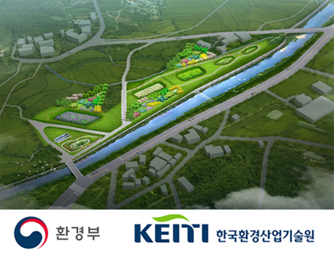
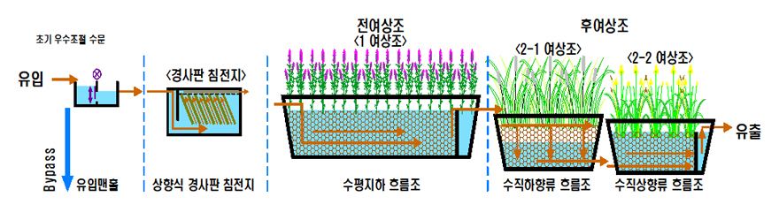
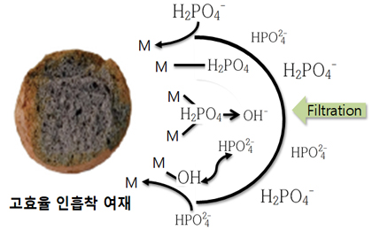
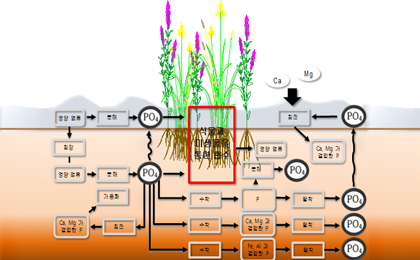
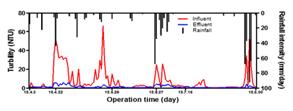
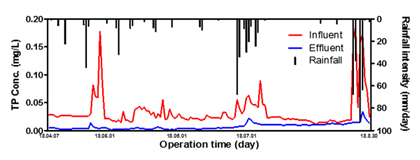

인공습지

인공습지 녹색기술 인증!
- 인증번호 : GT-19-00713
- 기술명 : 경사판 침전지와 인 흡착 여재를 이용한 비점오염원 저감용 지하흐름 인공습지 시스템
개요

| 사업명 | 조류 감시·제어 기술 개발 |
|---|---|
| 사업 수행 기간 | 2015. 08. ~ 2018. 07. |
| 총 사업비 | 5,596 백만원 (정부출연금 : 4,196백만원 / 민간부담금 : 1,400백만원) |
| 과제 수행기관 | 청호환경개발(주), (주)한국종합기술, (주)코비, (주)로터스엔지니어링, (주)에이엔엠, 거창군, (재)서울시립대학교 산학협력단 |
| TEST BED | 경남 거창군 가조면 수월리 1370 외 |
시설 제원
| 위치 | 부지 면적 | 시설 용량 | 비고 |
|---|---|---|---|
| 경상남도 거창군 수월리 1370 일원 | 약 12,000㎡ | 약 1,460㎥/일 |
EADS 인공습지 TEST BED 시공
공정별 기능

| 공정 | 유량 흐름 | 기능 | 처리 기작 |
|---|---|---|---|
| 유입 맨홀 | 수평 흐름(→) | 유입 유량 안전화 | |
| 경사판 침전지 | 상향류(↑) | 모래 등의 큰 입자 제거 | 침전 |
| 1 여상조 | 수평 지하 흐름(→) | 일반 여재를 적용한 1차 인 처리 | 여과, 여재 / 식물 흡착, 생분해, 미생물 흡수 |
| 2-1 여상조 | 수직 하향 흐름(↓) | 고효율 인흡착 여재를 통한 2차 인 처리 | 여재 / 식물 흡착, 미생물 흡수 |
| 2-2 여상조 | 수직 상향 흐름(↑) |
인공습지의 인제거 기작

고효율 인흡착 여재에 의한 흡착 및 여과

토양 내 침전, 식물 흡수, 미생물에 의한 제거
처리 효율
| 구분 | 유입 | 유출 | 제거율 | 비고 |
|---|---|---|---|---|
| BOD(㎎/L) | 8.4 | 1.4 | 83 | |
| COD(㎎/L) | 9.8 | 2.2 | 78 | |
| SS(㎎/L) | 27.3 | 3 | 89 | |
| T-N(㎎/L) | 4.39 | 2.29 | 48 | |
| T-P(㎎/L) | 0.594 | 0.022 | 96 |
- BOD 83%, SS 78%, T-N 48%, T-P 96%의 처리 효과를 보임.
- 유입수의 성상에 관계 없이 유출수에서는 일정한 배경 농도를 가짐.

연속 운영결과 - SS

연속 운영결과 - TP
공정별 인처리 기작
EADS 공정별 T-P Mass balance
| 공정 | 유입 부하량(㎏) | 유출 부하량(㎏) | 처리 부하량(㎏) | 제거율(%) |
|---|---|---|---|---|
| EAD 공정 | 170 | 51 | 118 | 70 |
| 침강지 | 170 | 85 | 84 | 50 |
| 1 여상조 | 85 | 69 | 16 | 10 |
| 2 여상조 | 68 | 51 | 18 | 10 |
여상조 기작별 T-P Mass balance
| 공정 | 처리 부하량(㎏) | 여과 및 침전(㎏) / 기여율(%) |
여재 흡착(㎏) / 기여율(%) |
식물 흡수(㎏) / 기여율(%) |
|---|---|---|---|---|
| 1 여상조 | 16 | 0.680 / 4.2 | 9.513 / 58 | 6.215 / 38 |
| 2-1 여상조 | 16 | 0.030 / 0.2 | 9.460 / 60 | 6.199 / 40 |
| 2-2 여상조 | 2 | 0.002 / 0.1 | 0.036 / 2 | 1.890 / 98 |
- 침강지에서의 제거 기작은 대부분 침강에 의해서 이루어짐, 여상지의 제거 기작은 여재에 의한 흡착, 여과, 토양 내 침전, 식물 흡수, 미생물에 의한 제거로 이루어짐
- 1 여상조의 여과 또는 침전에 의해 제거된 총 인은 4.2%, 여재에 의한 흡착은 8%, 식물 흡수에 의한 제거는 37.8%로 나타남
- 2-1 여상조는 여재에 의한 흡착 60.3%, 식물 흡수 39.5% 이며, 2-1 여상조에서는 식물에 의한 흡수가 98%로 나타남
- 2-2 여상지에 유입되는 총 인은 대부분 용존성 인으로 식재된 식물에 의해 대부분 흡수됨